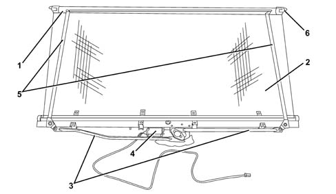

REARSCREEN BLIND (ELECTRIC)
- Path
- Descriptions > 70 FITTINGS > 7035 BODYSHELL WINDOWS > REARSCREEN BLIND (ELECTRIC)
- Kind
- system description
- Applies to
- all engines; all production periods
- Interactive page
- https://sloeber94.github.io/elrnDB-lThss/en/#/841005812
Applies to: all engines; all production periods
SPECIFICATIONS
An (electric) rearscreen blind operated by pressing the button in the centre console and on the rear seat armrest is available on request.
The blind is housed in the rear parcel shelf and amply covers the rear windscreen preventing the rays of the sun from entering the vehicle whilst at the same time it remains possible to see outside from the inside.
COMPOSITION
The system comprises an electric movement motor (4) to which the rods (3), that move the levers (5) are connected; the levers slide on guide cams on the trim (1) to which the cloth (2) is secured and the rubber rollers (6) rest againt the rearscreen glass at a predetermined force to prevent noise.
The unwinding/rewinding time is less than around 8 seconds.

- 1 - Trim.
- 2 - Cloth.
- 3 - Rods.
- 4 - Electric motor.
- 5 - Levers.
- 6 - Rubber rollers.
OPERATION
The operation is controlled by an end of travel device (window mechanism type); if the blind is operated it cannot assume intermediate positions: it is either fully raised or fully lowered.